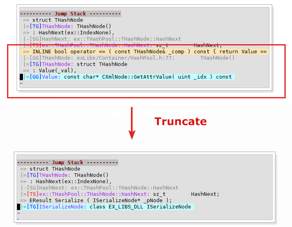

Basic Operations
When you use exVim to jump to the search result, it will records your jump history in the stack, so that you can trace back to the previous result.
The stack only records jump operations from exSymbolTable, exTagSelect, exGlobalSearch and exCscope, as known as the operations: <leader>sg, <leader>ss, <leader>ts, <leader>tg, <leader>gs, <leader>gg and so on.
To open the stack window, use <leader>tt. If you have jump stack, you will see several items in the window.
Concept
Stack State
A exVim jump stack consist of several stack states. The stack states is composed of one Entry, zero or several Transistions and one Destination. As a result, the structure of a jump stack would like the code below::
Jump Stack
|- Stack State 1
| |- Entry
| |- Destination
|- Stack State 2
| |- Entry
| |- Transition
| |- Destination
|- Stack State 3
| |- Entry
| |- Transition 1
| |- ...
| |- Transition n
| |- Destination
|- ...
|- ...
|- ...
|- ...
Entry
The Entry is the start point of a jump. Each time you produce a jump operation in edit-window, the current position of the cursor and buffer will saved as an entry point.
Transition
The Transition is the intermediate state of a jump. Those jumps operate in the ex-plugin window will be treat as a Transition, and push into current Entry.
For example when you in edit-window press <leader>gg on some word, it open the global search window lists the results and your cursor position in edit-window will be saved as Entry in exJumpStack. Then you press <leader>tg on some word in global search window, it will save the cursor position as Transition and push back to the Entry in exJumpStack, since the global search window is one of the ex-plugin window.
Destination
Once you select a item in ex-plugin window, and jump to it, the exJumpStack will save the position you jump to, save it as a Destination, and then finish a stack state by pushing it to the jump stack.
Operation
The jump stack records not only the jump position, but the operation you used to jump to the destination. An operation is one of the <leader>sg, <leader>ss, <leader>ts, <leader>tg, <leader>gs, <leader>gg. And will be marked at the beginning of the jump preview as [op]key_word:, where “op” is the operation type you used, and key_word is the word you operated.
Note: The op could be one of the SG,SS,GG,GS,TG and TS, and the key_word if not exists, would be N/A.
Conclusion
It is a little bit complex of these concepts, but you just need to think in another way: If you don’t go to (Destination), then where are you come from (Entry)?
The picture below shows what these concepts are in a jump stack:

Usage
Basic
You can move your cursor in the stack window to choose the item to jump. Only the Entry and Destination can be selected to jump, which are begin with (=> and |=), those line with gray color are the Transition line, and you can’t jump to it.

The picture shows the stack we have after doing several operations. The jump order could be:
- Start –> <leader>tg:TArray –> <leader>sg:sz_t –> <leader>ts:ex::THashSet::sz_t –> Dest
- Start –> <leader>gg:ConstIterator –> <leader>tg:xml_attributes_t –> Dest
- Start –> <leader>tg:iter_value_t –> Dest
Taglist
When you choose a item in the stack, no matter what operations it is, it will search back to nearest tag-operation, and load the taglist on that state.
Let’s take the picture above for example. When you choose the fourth item in the jump stack, you will got the taglist of ex::THashSet::sz_t, because it is the last tag operation you can get from your current position. When you are at the last item of the stack, you will get the taglist of iter_value_t, once you swith to the penultimate line, the taglist will become xml_attributes_t.
Truncate Stack
When you jump back, and start a new jump, the stack information after your current cursor position will be truncate, and the new stack state will pushed right after your cursor position, like the picture shows below:

Settings
The chapter exJumpStack introduces all the things you can set for exJumpStack.